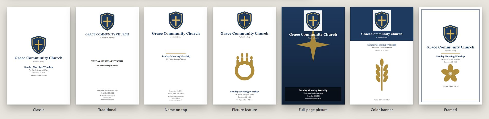
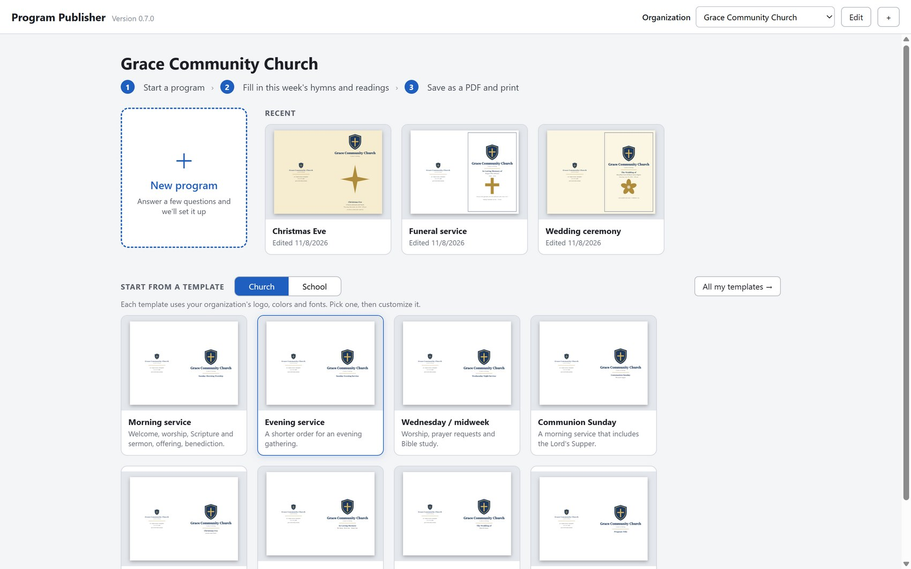
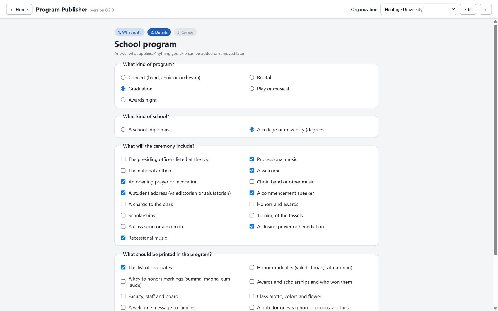
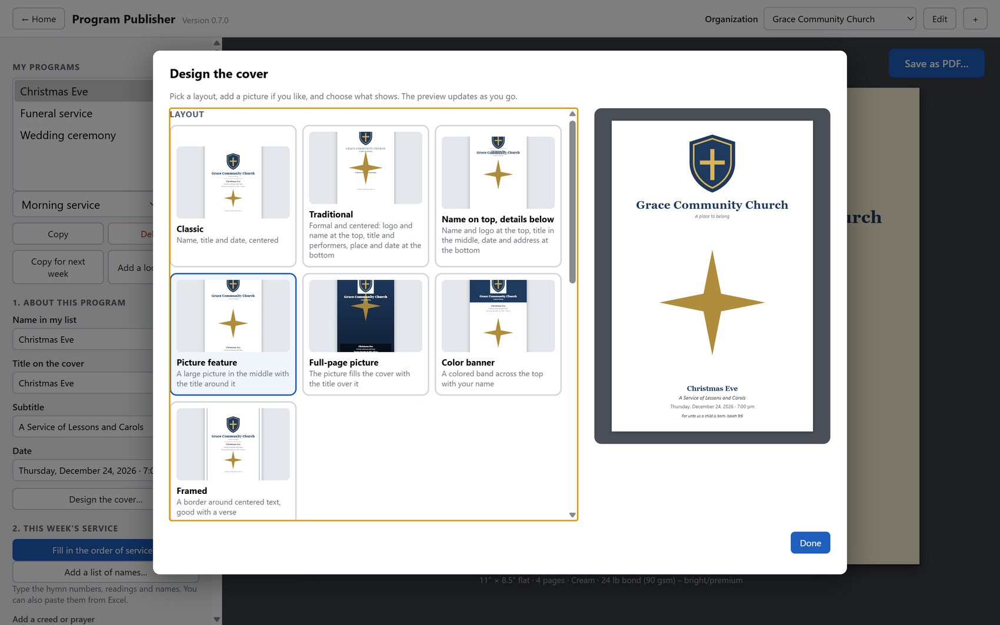
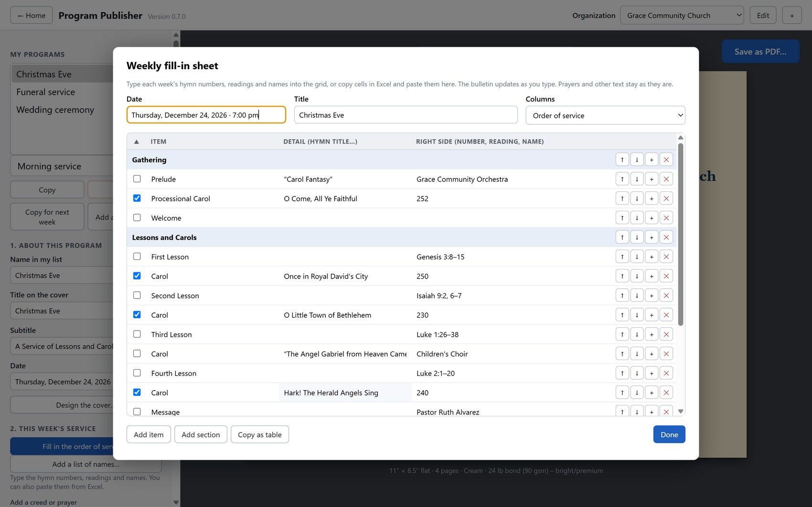
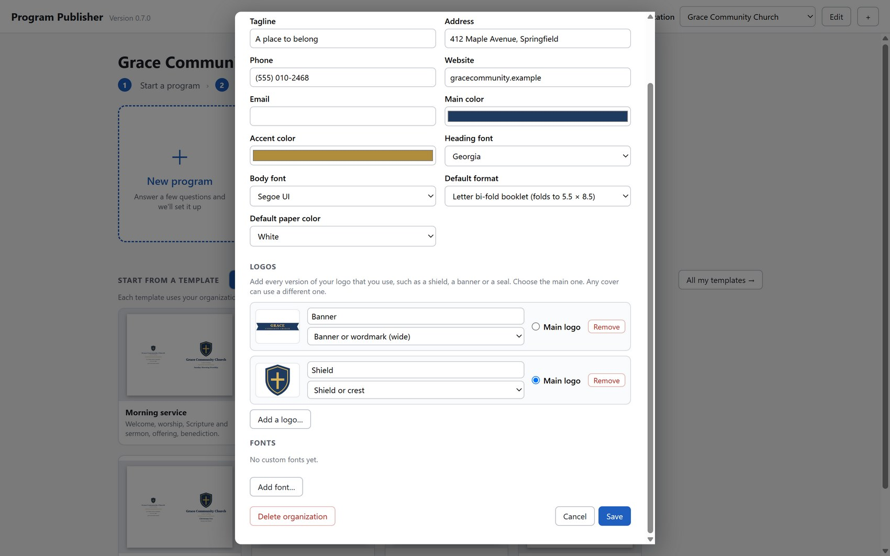

Answer a few questions and Program Publisher builds your Sunday bulletin, funeral or wedding program, school concert, recital or graduation. Add your logo, pick your paper, and print.
These sample programs are for made-up churches and schools. Click any of them to see the inside pages up close.
All sample names, hometowns and logos are invented for illustration.
Classic, traditional, name on top, picture feature, full-page picture, color banner and framed. Add your logo, a seasonal picture or a verse.

Tell it what kind of service or program, your tradition or school, and what to include. It builds the whole order for you.
Presbyterian, Anglican, Lutheran (ELCA & LCMS), Methodist, contemporary and simple, with the right hymnal labels.
Concerts, recitals, graduations, plays and awards nights. Rosters, honors and composers laid out like the real thing.
Keep each church or school’s logos (shield, banner, seal), fonts and colors. Run as many organizations as you like.
Type hymn numbers and names into a simple grid, or paste from Excel. The bulletin updates as you type.
A library of public-domain creeds, prayers and four catechisms you can add in one click.
Half-sheet booklets, legal and tri-fold. Pages come out in the right order for folding and stapling.
Runs entirely on your computer. Nothing is uploaded and there is nothing to subscribe to. GPL v3 open source.
Pick “New program” and answer a few plain-language questions, or start from a ready-made template. Switch between your church and school with one click.

Choose what goes on the ceremony and what gets printed. Then fill in hymn numbers, readings and names in a simple grid.

Design the cover, choose paper size and color, see a live preview, and save a print-ready PDF.


The weekly fill-in sheet

A library of logos for each church or school
Free for churches, schools and anyone who prints programs. Windows 10 or 11.
⬇ Download for Windows.exe).You do not need to write code. Pastors, secretaries, band directors and teachers know things programmers do not.
Something missing? Tell us what you print and what would save you time.
Open an ideaIf something looks wrong or confusing, let us know what you were doing.
Report a bugIf your tradition’s order is off, tell us how yours actually goes.
Send a correctionFork the project, make your change and open a pull request. See CONTRIBUTING.
How to contributegit clone https://github.com/churchappbuilder/Program-Publisher.git cd Program-Publisher npm install npm start # run the app npm test # run the tests